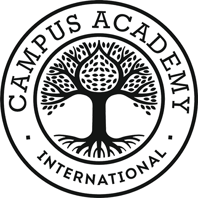
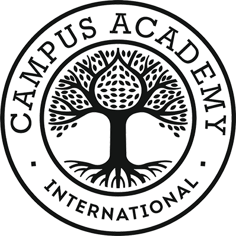

Samuel Wroblewski
Développeur en herbe
étudiant en b1 Informatique au sein de l'école Campus Academy
Après six années à travailler en tant qu’Educateur Spécialisé dans le champ de la protection de l’enfance,
je ressens le réel besoin de me reconvertir dans le domaine de l’informatique. J'ai donc rejoins le Campus Academy de Nantes, après m'être initié a divers language informatiques en autodidacte.
Ce site me permettera de vous présenter mon CV, ainsi que les différents projets que j'ai pu effectuer, qu'ils soient personnels ou professionnel. Vous pourrez bien évidemment me contacter via ce site, sans oublier de me laisser une recommandation si vous avez été satifsait de notre collaboration.
je ressens le réel besoin de me reconvertir dans le domaine de l’informatique. J'ai donc rejoins le Campus Academy de Nantes, après m'être initié a divers language informatiques en autodidacte.
Ce site me permettera de vous présenter mon CV, ainsi que les différents projets que j'ai pu effectuer, qu'ils soient personnels ou professionnel. Vous pourrez bien évidemment me contacter via ce site, sans oublier de me laisser une recommandation si vous avez été satifsait de notre collaboration.